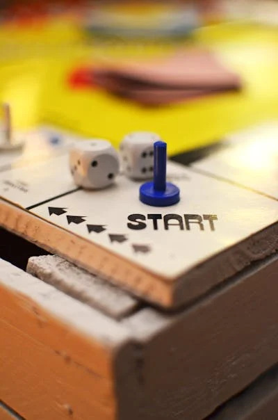

The Beginnings of Mini Materials
Mini Materials was founded with a simple yet unique idea: to bring real-world construction materials to the miniature world. The company's story began in 2015 when creator Ryan McVay noticed a gap in the market for high-quality, realistic building materials scaled down for hobbyists and professionals alike. McVay noticed a gap in the market for high-quality, realistic building materials scaled down for hobbyists and professionals alike. McVay's inspiration came from his love for both construction and art. He envisioned a way to combine these passions by creating products that offered an authentic building experience. Unlike many miniature kits on the market, which often rely on plastic or paper imitations, Mini Materials' approach was to create miniatures that feel real — because they are real. From tiny cinder blocks to scaled-down bricks and lumber, the company quickly gained attention for its commitment to realism. Initially operating out of a small workspace, Mini Materials relied on grassroots marketing, word-of-mouth, and social media to spread the word. The reception was overwhelmingly positive, with customers raving about the attention to detail and the unique nature of the products.